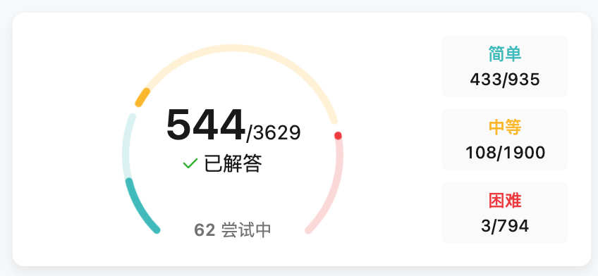

Recalling My Experience Attending Training Classes in University
Due to excessive brain stimulation from coffee, I inadvertently thought of this topic. I just mentioned the issue regarding webpage styles, including how the V2EX webpage displays poorly on the iPad mini 5 in portrait mode, and I also remembered that my current company has a blog with very rudimentary styling. I once directly pointed out the very obvious styling errors in it, but they have not been fixed. Since I have a blog myself, I usually pay great attention to optimizing its style. Although my blog’s overall style is copied from Wang Yin’s blog, I’ve made some improvements in the details. If my blog had obvious styling issues, I wouldn’t be able to stand it and would fix it immediately. So I guess that although some styling errors seem to be a matter of just a line or two of code to me, they might seem difficult to someone without relevant experience, which is why they haven’t been resolved.
This reasoning might be similar to how Steve Jobs, having had experience in the printing industry, paid great attention to the aesthetic display of fonts on Apple devices. Apple even designed its own better-performing fonts rather than using Microsoft’s. In fact, from the perspective of non-professional users like us, we might not even notice the difference in fonts, but professionals care a lot.
So, back to the issue of webpage styling, I began to wonder where my experience with webpage styles came from. I have a solid grasp of native HTML tags and CSS styles, but these experiences seem to be from a long time ago… Also, today I saw a post on V2EX titled “After working for 9 years, I’m still struggling. Does anyone have any advice?“. The description in the post gave me a sense of familiarity with the “struggle”, reminiscent of how girls in my university class would ask me questions. They all had something in common—it sounded like they were learning programming through rote memorization, which made me reflect on the long process of learning and hands-on coding that I went through…
I’ve always considered attending a training class to be a shameful experience, so I never wanted to mention it. But now, many years have passed, and my training class was during my university years, unlike those who attend training programs after graduation to find a job as a programmer. Training after graduation often isn’t driven by interest, leading to poor technical skills. Moreover, training classes aiming to help attendees find jobs often teach them how to fake resumes and interviews, giving the entire group of trainees a bad reputation. (In fact, the classmates in my training class were also very poor in terms of skill.)
The training class I attended was part of a school-approved 3+1 model, meaning we spent the first 3 years attending regular classes on campus, and in the 4th year, we took training courses off-campus, which allowed us to graduate normally without attending school classes. Of course, we had to pay the training fee of 18,000 RMB per person (the school leaders definitely took a kickback). The teachers who taught us at the training class were the regular teachers from our university’s computer science department, so there was no issue with the course content; it just focused more on hands-on coding rather than theory. Since I wasn’t a computer science major and was very interested in programming, I chose this path.
In terms of the timeline, we started in the second half of our junior year, taking a bus for over an hour every weekend to attend off-campus classes, then in the first half of our senior year, we had classes every day, which meant we spent a full year in the training class. In the second half of our senior year, I started my internship in Beijing and began working. The training courses mainly covered basic technologies such as HTML, CSS, JavaScript, Oracle, Java, and Java Web. During this learning process, the most important thing wasn’t the course content but the learning experience. The most memorable moment was when I spent an afternoon in the dormitory watching videos and coding. My roommate, who was about to go to class, was surprised when he returned and asked, “Have you been sitting here all afternoon without moving?” It wasn’t until he said that I realized several hours had passed without me noticing.
I found that I still have some of my study records from that time, which are preserved in Java1006 and Java1008. I remember when I was learning Vue.js, I followed a tutorial step by step and created a decent e-commerce app. When I was learning React.js, I also made a chat app. Unfortunately, I don’t know what I was thinking at the time—I felt it wasn’t technically significant enough to keep in my repository. I thought I would surely write more valuable, self-developed code in the future, so I deleted it. Later, when I wanted to find it again, I couldn’t. Looking back now, it was actually a valuable learning record. This incident taught me not to easily delete my online content; even if I don’t want it now, I might need it someday. That’s why I never delete anything from my blog once it’s written.
Not everything in the training class was good. For example, something ridiculous was that when we first joined, they made us practice typing using Jinshan Typing Tutor, and we even had daily speed typing competitions, where we had to do it every day. Of course, I was always the fastest, although looking back now, it seems pretty laughable.
The training courses were actually quite simple. I already knew the HTML, CSS, and JavaScript sections before taking the classes. I had self-taught PHP and MySQL long before and even followed tutorials to create an HTML version of Music Visualization. After the training courses, there was an assignment to replicate a website, where the teacher would pick a few websites, and students had to hand-code HTML and CSS to create an identical website. I still have the two webpages I created at that time—Website 1 and Website 2.
The most helpful part of the training for me was the Java section. Our major didn’t offer a Java course (we had courses on microcomputers, circuits, etc.), but the training class gave me a solid understanding of Java. The classes were taught by our university’s computer science professors. After each class, we had to complete some practice assignments, and I also wrote some simple study notes. Although I haven’t written Java code in a long time, I did formally learn object-oriented programming and used Java for about a year at work. In contrast, although I later used Go as my working language, I never formally studied it.
Besides the experience in the training class, another important part was my self-study, mainly using Mooc to watch online courses and follow along with the videos to code. The content was quite varied—I studied whatever I felt like. One number that stands out is 650 hours, which is the total length of time I’ve spent studying on Mooc. Looking back, I think it’s quite a significant amount. Of course, this record is from many years ago, and I no longer need Mooc tutorials after starting work.

Overall, with the training class experience combined with self-study, I gained quite a bit of coding experience, so I’m not too worried about not meeting the “qualified programmer” level when it comes to actual coding. However, I do lack in computer theory and algorithms; for instance, I still can’t distinguish between a heap and a stack. When asked in interviews where a variable is specifically allocated, I simply say I don’t know. The interviewer takes a look at my major and understands, “Oh, you’re not a computer science major.” Mainly, I’ve never encountered a job that required such knowledge to complete. Maybe I’ll take some courses to fill in the gaps out of interest in the future, but it definitely won’t be for the sake of interviews.
As for algorithms, I tried solving problems on LeetCode a long time ago, but my approach wasn’t effective—I solved a bunch of easy problems. On one hand, it was to avoid getting too frustrated at the beginning and to get a feel for things, and on the other hand, I didn’t have much time to focus on difficult problems while working. This is also a significant shortcoming.
It’s daylight now—time to sleep.